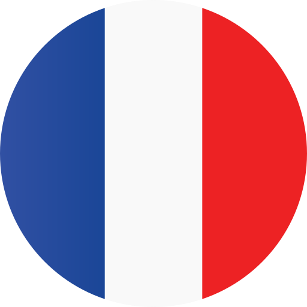

home
close
Welcome to Rhythmi's WhatsApp Page
Contact us through WhatsApp to get instant support or information.
Chat on WhatsApp
Our chat supports these languages!
English
العربية

Français
Türkçe
Your browser does not support the audio element.